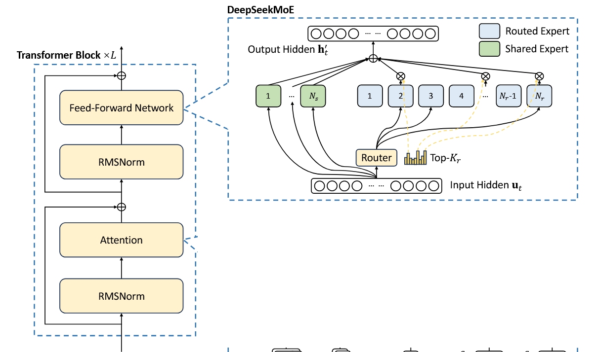
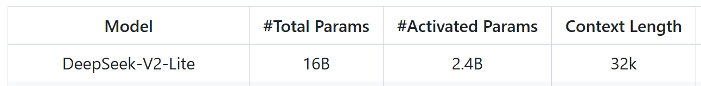

MoE Offloading：混合专家模型推理显存换入换出¶
一、任务说明¶
1.1 背景¶
随着深度学习模型的规模不断增加，模型的计算需求也随之变得更加庞大。为了优化计算性能并降低显存消耗，混合专家模型(Mixture of Experts, MoE)已成为一个重要的研究方向。它通过将模型划分为多个专家(expert)并动态路由输入token到特定专家，能够在保持计算量相对恒定的情况下大幅增加模型参数量。DeepSeek-V2-Lite-Chat就是这样一个MoE模型，其大部分参数集中在expert中。
然而，MoE模型通常参数量非常大，难以在单张GPU卡上完整加载和运行。本项目旨在通过offloading技术，在有限显存的单卡环境下成功运行DeepSeek-V2-Lite-Chat模型。
1.2 Offloading推理系统¶
Offloading推理系统是一种将模型部分参数或计算临时从GPU显存卸载到主机内存或存储设备的技术，当需要时才动态加载回显存。
对于MoE模型，由于每个输入token通常只激活少量专家，我们可以利用这一稀疏特性，只将当前需要的专家加载到显存中，其他专家暂时卸载到主机内存，从而大幅减少显存占用。
1.3 DeepSeek-V2-Lite-Chat模型¶
DeepSeek-V2-Lite-Chat模型的资料如下。一共27层，每层有64个专家，一个token激活6个专家，有2个shared专家。


deepseek-ai/DeepSeek-V2-Lite-Chat · Hugging Face
二、方法设计规范¶
2.1 系统实现（必选）¶
你需要实现DeepSeek-V2-Lite-Chat模型在单卡上的推理。在这一部分只实现expert参数的卸载。
- Epxert参数存放在CPU内存中，其他参数（shared expert、attention....）放在GPU显存中。
- 计算在GPU上进行，当目前layer需要使用expert时，将expert加载到GPU中进行计算。
2.2 优化（至少完成第一个）¶
首先要完成“专家缓存”，在完成后，可以进行“专家激活预测与预取”和“专家计算卸载”的优化。
-
专家缓存
-
GPU显存如果有额外空间，可以缓存一部分expert在GPU中，称为专家缓存，避免需要时再耗费时间加载。（例如缓存那些最常被激活的expert）
-
可以探索专家缓存策略：当加载新的专家进GPU时，需要驱逐专家缓存中的专家，例如用LRU、LFU等策略进行专家驱逐。
-
专家激活预测与预取
-
可以通过一些技巧预测下一层激活的专家，然后提前将这些专家加载到GPU中，避免需要时再耗费时间加载。
- 训练一个模型（例如简单的MLP）进行专家激活的预测，在layer i时预测layer i+k的专家激活
- 在layer i，可以直接使用layer i+1的gate进行layer i+1的专家激活预测
-
专家计算卸载
- 当所需专家不在专家缓存中时，直接将中间激活值传到CPU上，在CPU上进行expert计算（因为传输expert非常耗时，不如在CPU中进行计算）
参考资料:
- [ICLR'25] Fast Inference of MoE Models with CPU-GPU Orchestration
- [efeslab/fiddler: ICLR'25] Fast Inference of MoE Models with CPU-GPU Orchestration
- Fast Inference of Mixture-of-Experts Language Models with Offloading
- dvmazur/mixtral-offloading: Run Mixtral-8x7B models in Colab or consumer desktops
三、实验要求¶
3.1 评估指标¶
- latency：每个输出token间隔
- throughput：tokens per second
3.2 需要做的实验¶
自己选定数据集。
在不同配置下测量性能：
- Batch Size：1, 4, 8, 16
- Sequence Length：128, 256, 512
四、提交内容¶
-
代码
-
代码结构不做要求
- 要给出能够运行的python环境（requirement.txt）
-
要给出能成功运行代码的脚本
-
报告
-
实现方法：详细描述系统架构和实现方法
-
优化方法：说明采用的优化策略及其实现方法
- 实验结果：展示不同配置下的延迟和吞吐量数据，并对结果进行分析
五、注意事项¶
参考文献： 如果你在实验和报告中参考了已发表的文献，请列出你所参考的相关文献。
如有疑问，请联系 wzbwangzhibin@gmail.com 或 zzhbrr@gmail.com。